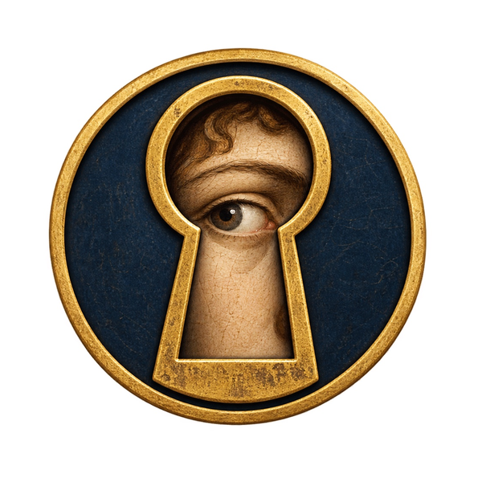

Contours that guide the eye
Follow the curve of a shoulder, a strand of hair or the edge of a garment: lines shape the figures and give the image its rhythm.
1445–1510 · Florence · Italian Renaissance
At the heart of the Florentine Renaissance, Botticelli brings grace of form and flowing lines to ancient myths and Christian stories. A glance, a gesture or a strand of hair caught in the wind can stir an emotion.
Sandro Botticelli (1445–1510), born Alessandro Filipepi, spent most of his life working in Florence. Trained by Filippo Lippi, he painted for churches and leading Florentine families, notably the Medici. He also helped decorate the Sistine Chapel in Rome. The painter of Primavera and The Birth of Venus combined the Renaissance rediscovery of antiquity with religious painting throughout his career.
Click an image to zoom. Use + / − or the wheel, then drag to explore.
01 / LOOK
The Medici at the feet of the Christ Child
What are the Medici doing at the feet of the Christ Child? Botticelli brings the faces of the powerful Florentine family into the biblical story. Around Mary and Jesus, religious devotion meets family prestige.
The three Medici traditionally identified as the kings had already died when Botticelli painted this work. Their gathering honours the family by placing its memory within a sacred story.
The patron was Gaspare del Lama, a businessman who commissioned the painting for his chapel in Santa Maria Novella. Paying tribute to the Medici also advertised his ambitions. Some portrait identifications are more secure than others.
Remember — A religious scene can also reveal the society that produced it: the kings carry the memory and power of the Medici.
Before becoming a dynasty of princes, the Medici were a family of bankers. Their wealth and networks gave them considerable influence in Florence, a city that still retained its republican institutions.
Cosimo the Elder consolidated this power in the fifteenth century. Supporting religious buildings, artists and scholars expressed devotion and taste, while leaving the family’s mark on the city.
His grandson Lorenzo, known as the Magnificent, became another central figure in Florentine life. Poetry, ancient learning and artistic creation met around the Medici. Botticelli worked within this world, where images could celebrate faith, beauty and prestige.
In the Adoration of the Magi, the patron Gaspare del Lama honours the family by gathering its members around Jesus. The Medici also belonged to the Company of the Magi and took part in Florence’s Epiphany celebrations.
The painting shows how a family could enter history… by entering a sacred story.
02 / LOOK
Beauty borne on the wind
A shell, flowing hair, a naked goddess: a few shapes make this painting instantly recognisable. Botticelli imagines Venus, goddess of love and beauty, arriving on the shore. Everything around her moves; she seems suspended in a moment of stillness.
Despite its title, the painting shows Venus reaching the shore, rather than the instant of her birth from the sea.
With this large nude figure inspired by antiquity, Botticelli gives mythology a striking place in Renaissance painting. The long neck, flowing contours and rippling hair create a beauty particular to this painter.
Notice how the curves echo one another: the body, the hair and the folds of the cloak give the painting an almost dancing rhythm.
Remember — For Botticelli, beauty also emerges from flowing lines. Following a contour becomes a way to feel the painting.
To the Greeks she is Aphrodite; to the Romans, Venus. The goddess of love, beauty and desire holds power over gods and humans alike.
There are several accounts of her birth. In the Greek poet Hesiod’s version, Cronus mutilates his father Uranus, the Sky, and throws his genitals into the sea. Aphrodite emerges from the foam: beauty born from an act of violence.
Botticelli leaves that violence outside the picture. The goddess is already born, standing on a shell and carried towards the shore by the winds. Zephyr, the west wind, blows from the left, accompanied by a female figure sometimes identified as Aura, the breeze. A young woman, often recognised as a Hora of spring, awaits her with a cloak.
Behind this peaceful image lies a less innocent story: desire emerging from conflict among the gods.

Another lookConcealing… and drawing the eyeVenus conceals her breasts with one hand and her sex with her hair. The gesture recalls the ancient “modest Venus”. Yet the hand and the flowing strands also guide our eyes towards what they hide.
We can read this as a tension between modesty and sensuality: the body is revealed through the very act of covering it.
03 / LOOK
A garden of desire and transformation
Flowers are not the only things blossoming here: desire passes between the figures. Botticelli gathers nine mythological characters in an orchard. Start on the right and follow their gestures.
The painting brings together several mythological figures and episodes, rather than illustrating one continuous story.
On the right, desire takes the form of pursuit and capture; on the left, the Three Graces link hands in a measured dance. Venus holds a calm, central position between these movements.
Many recognisable plant species contribute to this evocation of spring, love and fertility. The precise meaning of the whole remains debated. Identifying the figures does not mean solving every mystery.
Remember — Seizing, scattering, aiming, dancing: gestures tell stories. Following hands and glances helps us enter a complex image.
Why are flowers emerging from this young woman’s mouth? On the right of Primavera, Botticelli makes the passage from Chloris to Flora visible.
In his Fasti, the Roman poet Ovid tells the story of Chloris, a nymph — a deity associated with nature. One spring day Zephyr, the god of the west wind, sees her. She moves away; he pursues her. She flees, but he seizes her and forces himself upon her.
Zephyr then marries her and gives her a garden of perpetual spring. He grants her power over flowers: Chloris becomes Flora, the Roman goddess of flowering. The ancient account presents their marriage as making amends for the initial violence.
Botticelli brings both moments into one image. On the right, Chloris still turns an anxious face towards Zephyr, flowers escaping from her mouth. Beside her, she appears as Flora, wearing a flowered dress and scattering roses.
Two women follow one another, yet tell a single story. Beneath the abundance of flowers, the painting preserves the memory of violence before transformation.
04 / LOOK
When lies take power
A beautiful woman drags an innocent man by the hair. Can appearances be trusted? In a sumptuous palace, Botticelli turns calumny — a false accusation — into a scene where each figure embodies an idea.
Botticelli draws on a text by the ancient author Lucian of Samosata, describing a lost painting by the Greek artist Apelles. According to the account, Apelles devised the composition after suffering a false accusation himself.
Botticelli revives an ancient painting through the words that preserved its memory: another way for the Renaissance to reconnect with antiquity.
The setting is rich and Calumny attractive. Yet their beauty accompanies an injustice. Away from the crowd, Truth’s nakedness can be read as the absence of disguise.
Remember — Watch who speaks to whom, who leads whom and who remains alone: Botticelli gives bodies and gestures to the workings of a lie.
A FEW CLUES
Follow the curve of a shoulder, a strand of hair or the edge of a garment: lines shape the figures and give the image its rhythm.
Long necks, fine fingers and gently tilted heads give the figures a distinctive grace. Their poses sometimes seem part of a dance.
Rippling hair, ribbons and drapery extend the movements of the body. Even a still figure can seem touched by a breeze.
Faces are often thoughtful, eyes lowered or distant. Even in luminous scenes, beauty carries a certain seriousness.
Flowers, jewels, embroidery and hair reward a closer look. In Primavera, the garden almost becomes a second painting to explore.
Follow the lines, then the glances: see how Botticelli sets movement and emotion in motion.
Go further
In The Birth of Venus you recognise me immediately. In Primavera I am more discreet, yet I still stand at the centre. Who am I?
Venus, of course! Naked on her shell in The Birth of Venus, she is clothed and slightly set back in Primavera. Look for her son Cupid above her.
Compare their gently tilted heads, thoughtful faces and delicate gestures. Both share Botticelli’s distinctive grace.
One last challenge: find another character who appears in both paintings.
Zephyr, the west wind! On the left in The Birth of Venus he blows towards the goddess; on the right in Primavera he pursues Chloris.
With Botticelli, follow the lines: they make bodies dance and emotions surface.
Painting descriptions and identifications: Uffizi Galleries. Dates and portrait identifications may vary between sources.